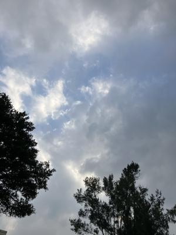
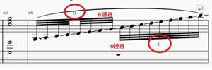

うるがいの話 ある日
最新: ９連符【うるがいの話 ある日】とは 一日だけのプログです
『うるがいの話』の最新一日だけのプログで、通信料が少なく経済的だ。カニの画像をクリックすると全ての日付が載る『うるがいの話』サイトを表示します
|
|
【うるがいの話】 うるがい(ｳﾙｶﾞｲ urugai)とは、『もずくがに』の名前でとても大きくなります。 |
|---|---|
|
|
【カミマヤーの話】 猫のことを方言でマヤーといいます。カミマヤー（kamimayaa）とは、神の猫のことです。 |
|
【たながぁの音楽】 たながぁ（ﾀﾅｶﾞｰ tanagaa）とは手長えびのことで、何種類かあり大きいのは車 エビぐらいになります。 |

|
【ぶながぁの話】 ぶながぁ(ﾌﾞﾅｶﾞｰ bunagaa)とは、赤い髪の毛、赤い身体、そして身長は１ｍ２０ｃｍ ぐらい、川の蟹を食べているの目撃された。場所は沖縄県国頭郡大宜味村のと ある村僕の隣近所に住んでいる爺さんから、聞いた話です。 |
|
|
【ギーマの話】 ギーマ(giima)とは、山原の里山に咲くスズランに似た、 花を付けます。実は食べられます、 気が付くと口の周りが紫になっています。 |
2024年01月11日 (木）９連符
15:02

自腹で購入した『心が癒される極上のヒーリング名曲（中級～上級対応）』の
本にあった『ジュピター組曲「惑星」より（ホルスト）』を楽譜ソフトに打ち
込む。最後の小節で、８連符と９連符がある。なんと、楽譜ソフトで連符を打
ち込むとき最大９が選択できるのだが、９連符を使うときは何だろう？と思っ
ていた。『禁じられた遊び』は３連符のみ、『かぐや姫 なごり雪』は４連符
がびっしり、連符に頭は慣れてきた。この、オクターブを連続して弾く８連符
と９連符は、ピアノのオクターブ連打というらしい。ホー、弾くのはとても難
しいが、楽譜ソフトでは簡単である（なんと不埒な）。本を元に、演奏させた
が、最後のほう（多分、本を出した人の編曲箇所）いまいちなのです。

ユーチューブ動画を参考にする。刺激を受けたのは、ウクレレの『ジュピター
平川綾香』なのだが、音符が残念ながら外れている（楽譜を同時に、容易に比
較できる）。ネットをさらに検索・・・。とある解像度が悪いが、演奏がいい
ものを参考にする。ただ、演奏時間が５分少々とナガイ、少しテンポを速くし
５分以下にする、暇人は延々と１週間かけ完成させる。いつの間にか、クラシ
ックの「惑星」から、「ジュピター平川綾香」になっていった。動画であえて
冒頭の小節の歌詞を、省いているところはクラシックと同じ楽譜。テンポが早
くなる箇所から編曲だと分かる。オクターブ連打の小節は結局ぼつになった。
『ジュピター Jupitar 三線』４分４１秒
ユーチューブ動画
１４時５１分 ビットコインの総資産 ￥１９、４１７（↑９４）